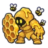

สวนรังผึ้งร้าง
ดูบนแผนที่และวิธีไป วางแผนฟาร์ม
ชั้นล่างในป่ากองไฟ · Lv 8–18
มอนในแมพ (7)
| มอน | Lv | ธาตุ | โซน |
|---|---|---|---|
| 10–18 | ดิน | ต้นไม้รวงผึ้งยักษ์ | |
| 8–18 | ลม | ต้นไม้รวงผึ้งยักษ์ | |
| 8–16 | น้ำ | ต้นไม้รวงผึ้งยักษ์ | |
| 8–16 | ไม่มีธาตุ | ต้นไม้รวงผึ้งยักษ์ | |
 โกเลมรวงผึ้ง | 8–18 | ดิน | ต้นไม้รวงผึ้งยักษ์ |
| โกเลมรวงผึ้ง · ร่างขี้ผึ้งฟ้า | 10–18 | ดิน | |
| 24–24 | ลม |
อุปกรณ์ที่ดรอปในแมพนี้
| ของ | โอกาสสูงสุด |
|---|---|
| 0.5% | |
| 0.5% | |
| 0.25% | |
| 0.25% | |
| 0.25% | |
| 0.25% | |
| 0.25% | |
| 0.25% | |
| 0.25% | |
| ชุดผึ้งน้อย | 0.15% |
| 0.12% | |
| 0.12% | |
| 0.12% | |
| 0.12% | |
| 0.12% |